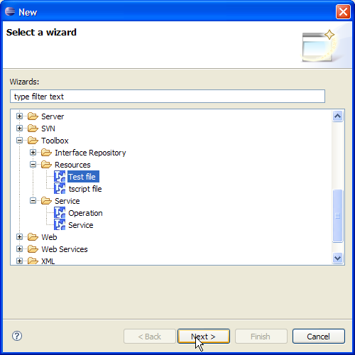
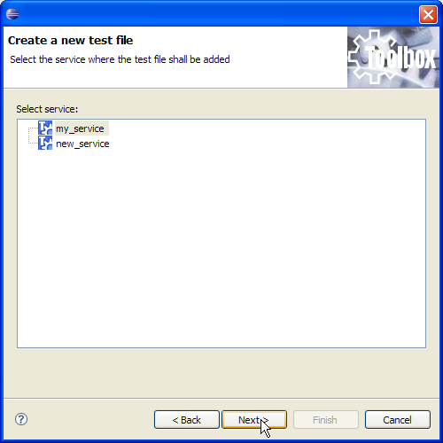
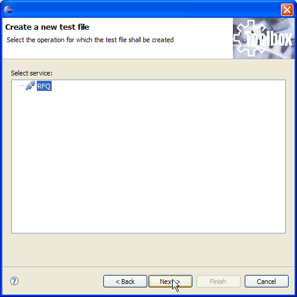
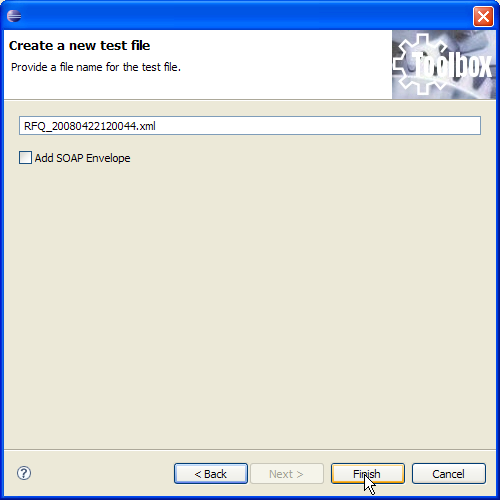

If necessary, test files can be created and added to the project. To achieve this point select the service and right click on it. Select "New/Other" from the pop up menu. The below wizard page is shown. Now select "Toolbox/Resources/Test File" and click on "Next".

A new wizard page is shown, allowing you to change the service to operate on (in case you have erroneously selected the wrong service) selecting it. Now click on "Next".

If you have created a service selecting its interface from the Interface Repository the below page is shown otherwise it is skipped. This page will let you specify the operation for which the test file shall be created. For operation whose interface is in the Interface Repository, the test file is an operation specific template while in all other cases an empty file is created. The figure below shows the step described in case an RFQ operation test file shall be created.

Clicking on "Next" the last wizard page is shown. This page will let you provide a name for the test file and let you choose to add a SOAP envelope to the created file.

When clicking on "Finish" the test file is created under the folder <service_name>/Test Files/<operation_name> (for the above example under my_service/Test Files/RFQ).